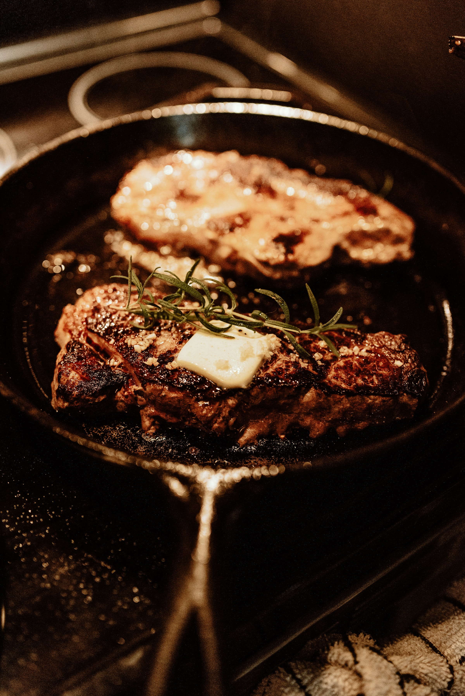

COISINE

料理風格
即烹調時偏向的取向，哪一種食材偏多？哪一種調味料性質？以及代表國家菜系，味道取向，口味喜好

飲食文化
地理環境，臨海地區或內陸地域很大程度上決定了當地人們的飲食，食材取得容易與否、盛產農作物、牧場飼養、水產捕撈、偏好加工品

人文
飲食文化和當地人民習性息息相關，喜歡大桌共同飲食和喜愛分享的人民特性息息相關。喜愛宴會派對和熱情開朗的習性有關。喜愛精緻飲食以及追求新事物的感受，也和收入、現代生活飲食有關